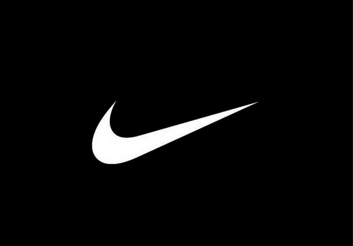
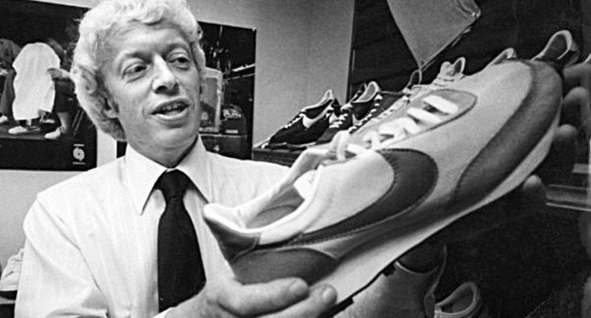

Nike, la historia del logo más famoso del mundo. Fue en 1968 cuando Phil Knight funda la marca Nike, cuyo nombre se basaba en la diosa griega de la victoria "Niké". ... Carolyn Davidson afirma que se basó en el ala de la diosa griega "Niké" para diseñar el símbolo dinámico que hoy conocemos (más en EEUU) como el "Swoosh". Fue fundada por el deportista de la Universidad de Oregón Phil Knight y su entrenador, William Jay "Bill" Bowerman. La empresa comenzó distribuyendo calzado de la firma Onitsuka Tiger (actualmente ASICS) hasta 1971, cuando BRS lanzó su primer producto propio, con el emblema de la marca diseñado por Carolyn Davidson. Según Otis Davis, un deportista, quien Bowerman entrenó en la Universidad de Oregón, que más tarde pasó a ganar dos medallas de oro en los Juegos Olímpicos de Roma 1960. Bowerman hizo el primer par de zapatos Nike para él, lo que contradice la afirmación de que se hicieron por Phil Knight. Dice Davis. “le dijo a Tom Brokaw que yo era el primero. No me importa lo que dicen todos los multimillonarios. En 1964, en su primer año en el negocio, BRS vendió 1300 pares de zapatos para correr ganando en total 8000 $. Antes de 1965 la nueva compañía había adquirido un empleado a tiempo completo, y las ventas habían alcanzado los 20.000 $. En 1966, El BRS abrió su primera tienda ubicada en el 3456 Bulevar en Santa Mónica, California, junto a un salón de belleza. En 1967, debido al rápido aumento de las ventas, el BRS expandió sus operaciones al por menor y distribución en la costa este, en Wellesley, Massachusetts. En 1971, la relación entre BRS y Onitsuka Tiger estaba llegando a su fin. BRS se prepara para lanzar su propia línea de calzado, lo que llevaría el Swoosh de nuevo diseño por Carolyn Davidson. El Swoosh se utilizó por primera vez por Nike el 18 de junio de 1971, y el 22 de enero de 1974 se registró en la Oficina de Patentes y Marcas de Estados Unidos
Phil Knight, director general de Nike, nos cuenta por primera vez la auténtica historia detrás de la empresa que fundó en 1962, que hoy en día factura más de 30.000 millones de dólares al año, y cuyo logo ha llegado a ser un símbolo global, el icono más ubicuo y reconocido en todo el mundo. En 1976, la compañía contrató a John Brown and Partners, con sede en Seattle, como su primera agencia de publicidad. Al año siguiente, la agencia creó el primer "anuncio de marca" de Nike, llamado "No hay línea de meta", en el que no se mostró ningún producto de Nike. En 1980, Nike había alcanzado una cuota de mercado del 50% en el mercado de calzado deportivo de Estados Unidos, y la compañía se hizo pública en diciembre de ese año. Un Nike Store en el centro de Buenos Aires, Argentina. Juntos, Nike y Wieden + Kennedy han creado impresión y anuncios de televisión. Wieden + Kennedy sigue siendo la agencia de publicidad principal de Nike. Fue cofundador de la agencia Dan Wieden, quien acuñó el lema ahora famoso "Just Do It" para una campaña publicitaria de Nike 1988, que fue elegida por Advertising Age como uno de los cinco lemas más importantes del siglo XX y que está consagrado en la Smithsonian Institution.11 Walt Stack apareció en el primer anuncio de Nike "Just Do It", que se estrenó el 1 de julio de 1988.12 Wieden atribuye la inspiración para el lema de "hagámoslo" (let's do it), las últimas palabras pronunciadas por Gary Gilmore antes de ser ejecutado.13 A lo largo de la década de 1980, Nike ha ampliado su línea de productos para abarcar muchos deportes y regiones de todo el mundo.
Dejamos un enlace por si te intereso nuestra historia, para que puedas seguir leyendo CLICK ACA!